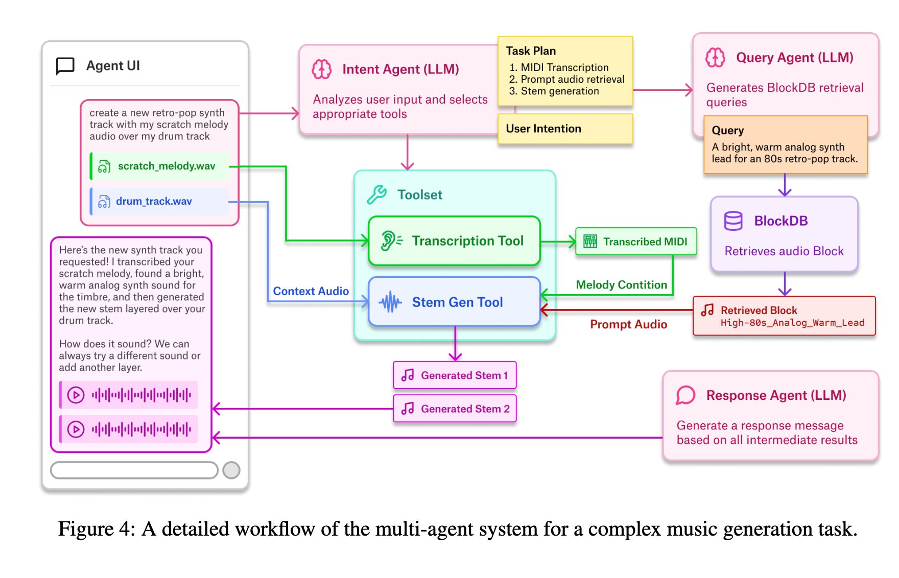

Abstract
abstract abstract abstract abstract abstract abstract abstract abstract abstract abstract abstract abstractabstractabstractabstract abstract abstract abstract abstract abstract abstract abstract abstract abstract abstract abstract abstract abstract abstract abstract abstract abstract abstract abstract abstract abstract abstract
